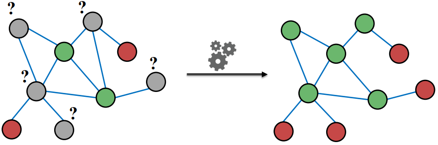
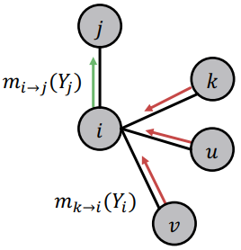
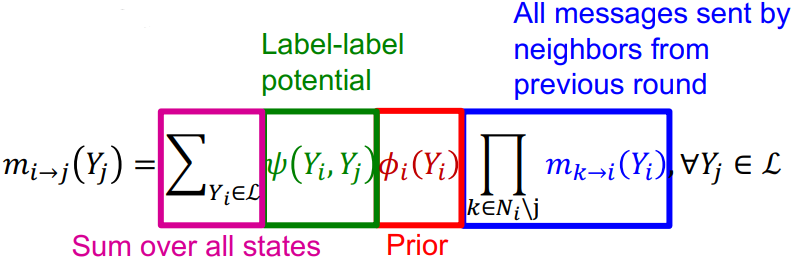
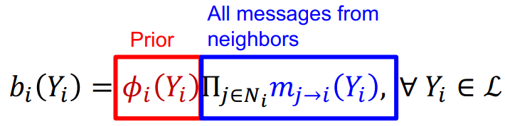

在这节课中我们将讨论三种基于消息传递进行节点分类的半监督学习方法：relational classification, iterative classification, belief propagation。
本文主要参考资料为CS224W的Lecture 5，课程视频可在Youtube观看。
我们在这一节考虑的问题为：已知图中部分节点对应的label，预测剩余节点的label。

Collective Classification
在很多场景下，拥有相似label的节点会连接的更紧密，因此可以用协作分类(collective classification)来预测节点的label，即用周围节点的label来预测自己的。这也是message passing的基本思想。其实之前讲过的PageRank也是这个思想，只不过在PageRank中我们传递的是节点的score，而在这一节中我们讨论的是传递信念(belief)，即节点属于某类的概率。
那么为什么相近的节点会倾向于有相似的label呢？可以从两方面来看，一是同质性，比如有相同爱好的人会比爱好不同的人联系更紧密；而是影响性，比如关系相近的人之间的爱好可能会相互影响。
在相近节点趋于有相似label的假设下，对节点$v$的label的预测就不仅取决于它本身的feature，还要考虑他的邻居节点的feature和邻居节点的label。这里我们需要做一个假设，即节点$v$的label$Y_v$只取决于其邻居节点$\mathcal{N}_v$的label：
Collective classification包含三部分：
(1). Local classifier: 仅利用feature进行预测，不考虑图结构信息，这一部分只用于初始化；
(2). Relational classifier: 捕捉关系信息，利用邻居节点的信息预测自己的label；
(3). Collective inference: 对每个节点都apply Relational classifier，迭代进行直到收敛。
Relational Classification
关系分类的基本思想是用邻居节点的label的分类概率的加权平均来作为节点$v$的分类概率。根据上面提到的三部分，分别对应为：
(1). Local classifier: 对于有标签节点，其label对应的概率就设为$Y_{v}^{\star}$，对于无标签节点，将$Y_v$初始化为0.5；
(2). Relational classifier: 捕捉关系信息，利用邻居节点的信息预测自己的label
(3). Collective inference: 对每个节点都apply Relational classifier，迭代进行直到收敛。
这个模型的缺点是没有收敛性保证，且没有用到节点的特征信息。
Iterative Classification
迭代分类同时用到了节点的特征信息和网络的结构信息，即根据节点$v$本身的feature $f_v$和邻居节点集$\mathcal{N}_v$的label $z_v$来对节点$v$进行预测。迭代分类首先需要训练两个分类器，一个是根据节点特征预测label的分类器$\phi_1(f_v)$，还有一个是根据节点特征$f_v$和邻居节点标签的summary vector $z_v$预测label的分类器$\phi_2(f_v,z_v)$。根据上面提到的三部分，分别对应为：
(1). Local classifier: 用$\phi_1(f_v)$进行预测；
(2). Relational classifier: 对每个节点先计算$z_v$，再用$\phi_2(f_v,z_v)$进行预测；
(3). Collective inference: 对每个节点都apply Relational classifier，迭代进行直到收敛。
Loopy Belief Propagation
在信念传递法中，每个节点都会根据邻居节点发送的message来更新自己的belief，然后根据自己的更新值再把更新后的message传送给其他节点。

信念传递主要包含以下几个部分：
Label-label potential matrix $\boldsymbol{\psi}$: $\boldsymbol{\psi}\left(Y_{i}, Y_{j}\right)$表示在$j$属于$Y_j$的情况下其邻居节点$i$属于$Y_i$的概率；
Prior belief $\phi$: 先验概率；
$m_{i \rightarrow j}\left(Y_{j}\right)$: 节点$i$认为节点$j$属于$Y_j$的概率；
$\mathcal{L}$: 所有标签的集合。
在信念传递中，根据上面提到的三部分，分别对应为：
(1). Local classifier: 根据feature计算先验概率$\phi$；
(2). Relational classifier: 计算message

(3). Collective inference: 对每个节点都apply Relational classifier，迭代进行直到收敛

这个方法的缺点是没有收敛性，特别是存在很多闭环的情况，且势能函数是需要训练的。